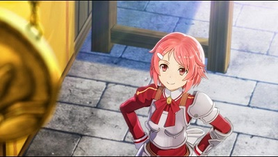

Sword Art Online - Hollow Fragment
I have talked about this in my blog before, and I feel as though I should talk about it once more. To start off, I shall quote myself, "The game has really good fantasy-themed music, and it really fits the atmosphere when there's a change in setting. The voice-acting for the main characters, in the asian version at least, seem to be voiced by the anime's voice cast, thus giving that immersive feel of being in the game itself."
I would like to reiterate that this immersive feel still has its effects on me, despite my playing of the game for more than several hours now. The voice-acting is also reminiscent of the series, and I never get tired of hearing the characters talk in their original Japanese voices.
All in all, I still keep my stand of recommending this game for those vita players out there whom are fans of the Sword Art Online series.